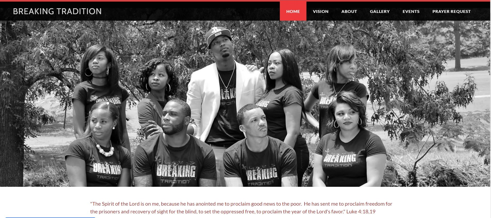
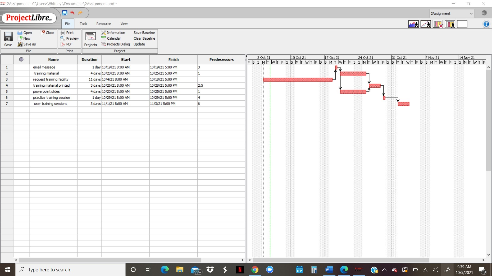

Work Examples
Writing Example 1
This is example of my writing click Project-Charter"Writing Example 2
This is example of my writing click Writing Example 2Web Project 1
To see my very 1st website I designed, please click on the link below.
https://breakingtraditionministry.weebly.com/
Web Project 2
Programming Project 2
This is example of my Program 1 Assignment click Programming Project 2Soft Skills Project 1
An example of a project I created in my Document Design Class. My book jacket was design to invite you into my person space. A space hidden from bird’s eye view. Portrait of a broken heart is a document of a book cover intended to reach every bookstore, library, internet, retail store and television. Producers aren’t allowed to do a documentary or any type of movie, short film without my permission. The purpose of my book is to reach the broken. The primary users of this document are the readers who are looking for help. Someone who can relate to a heartache. Not only relate but who also has overcome trials and tribulations. My book jacket was design with my photo attached to it. I’m sure that viewers will be very satisfied at every cost.

 An example of a Gantt chart and a PERT chart from my System Analysis and Design Class
An example of a Gantt chart and a PERT chart from my System Analysis and Design Class